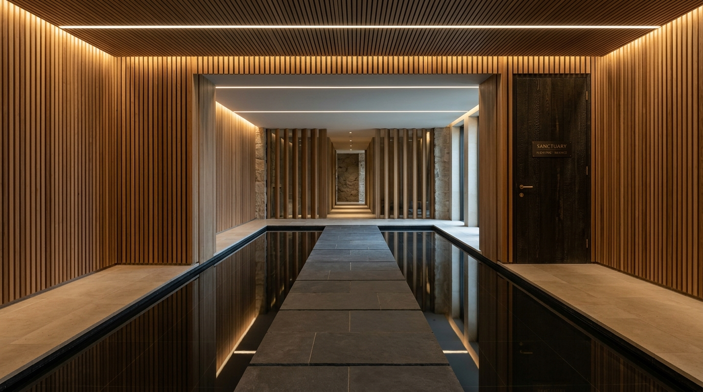
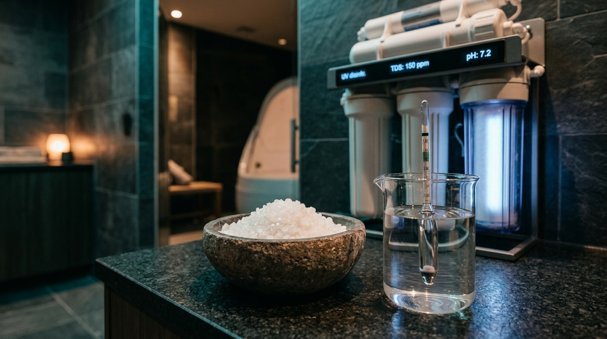

Engineered for Stillness: The Sensory Restoration Sanctuary
Born at the intersection of biophilic architecture and clinical sensory reduction, Stillwater was conceived to solve the defining crisis of modern life: relentless digital stimulation, spinal compression, and autonomic nervous system exhaustion.
Inside our acoustic isolation chambers, gravity releases its grip. Over 1,200 pounds of pharmaceutical-grade Epsom salt suspend your physical body in exact skin-temperature thermal equilibrium (94.0°F), allowing your brain to transition into the restorative theta state typically reserved for deep meditative monks.


From Clinical Laboratory to Human Sanctuary
In 2021, our founders—a multidisciplinary team consisting of an integrative neuroscientist, an acoustical engineer, and a restorative physical therapist—noticed a silent epidemic among urban professionals, athletes, and creative thinkers: profound cognitive burnout.
While conventional wellness focused on active stimulation (massage oils, ambient chatter, saunas with loud music), true neurological restoration required the exact opposite: the deliberate subtraction of all sensory input.
We spent two years testing custom fiberglass acoustics, magnetic silent ventilation baffles, and triple-filtered mineral saturations to engineer a space that feels like floating in deep cosmos. Today, Stillwater stands as the Pacific Northwest’s premier center for zero-gravity restorative therapy.
Our Mission & Future Vision
Establishing a sanctuary where silence is recognized not as an absence, but as essential nourishment for the modern mind.
Our Values & Philosophy
Four non-negotiable principles that guide every aspect of the Stillwater guest experience.
Sensory Sovereignty
You possess complete control over your environment. Ambient lighting, music fading, door closure, and temperature can be customized in every pod to suit your personal threshold.
Zero-Gravity Physics
By supersaturating 200 gallons of purified water with 1,200 pounds of magnesium sulfate, we create a 1.28 specific gravity medium that eliminates gravity's load on human joints and vertebrae.
Medical-Grade Purity
Water is sacred. Between every guest session, 100% of the mineral solution undergoes 4 full cycles through 1-micron filtration, ozone injection, and germicidal UV-C treatment.
Unrushed Transitions
We schedule generous 30-minute buffers between every booking. Guests are never rushed out of their private suite, and our post-float organic tea lounge welcomes leisurely integration.
The Science & Craftsmanship of Stillwater
Why our float chambers deliver unmatched depth, comfort, and restorative efficacy.
Flotation REST (Restricted Environmental Stimulation Technique) requires precise physical parameters to trigger parasympathetic activation. A variance of even 1.5°F can cause chills or perspiration, disrupting theta rhythm induction. Here are the exact engineering thresholds maintained across our sanctuary:
Our Signature Offerings & Suites
Every client's sensory comfort is unique. We provide three distinct chamber architectures.
Pod Alpha — Zero-Gravity Capsule
The quintessential sensory deprivation cocoon. Featuring hydraulic lid assist, interior audio controls, starlight roof chromotherapy, and total sound isolation.
Basin Beta — Open Ocean Suite
Engineered specifically for guests with claustrophobia or first-time floaters. An expansive open-air heated pool room with 9-foot ceilings and radiant underfloor warmth.
Contrast Circuit — Sauna & Cold Plunge
Combine deep flotation with cedarwood infrared thermotherapy and a 48°F purified ice bath for unmatched vascular flushing, dopamine release, and muscle recovery.
Our Rigorous 4-Cycle Sanitization Protocol
Float water at Stillwater is significantly purer than typical drinking water standards.
Because each chamber contains 1,200 pounds of pure Epsom salt, the water naturally creates a hyper-saline environment where bacteria cannot survive. In addition, our automated commercial filtration runs four complete turnovers between every single guest:
1-Micron Microfiltration
Every droplet passes through dense surgical-grade polyester filters capturing all microscopic particles and organics.
Dual Germicidal UV-C
High-output ultraviolet irradiators disrupt viral and microbial DNA, rendering pathogens completely neutral.
Advanced Ozone Oxidation
Active O3 injection oxidizes organic matter 3,000 times faster than chlorine, dissolving cleanly into pure oxygen.
Digital Photometer Validation
Sanctuary facilitators manually verify specific gravity (1.28) and pH balance before opening the suite for your session.
Our Future & Community Commitments
Investing in neurological health, clinical research, and sustainable stewardship.
Neuroscience Research Grants
We proudly allocate chamber hours to clinical researchers investigating the efficacy of REST therapy for chronic migraines, tension headaches, and athletic post-concussion recovery.
First Responder Decompression
Our "Quiet Harbor" program provides subsidized float credits every Tuesday morning to ER nurses, paramedics, and firefighters facing occupational hypervigilance.
Eco-Sustainable Magnesium Loop
Whenever mineral baths are renewed, all extracted magnesium is neutralized and donated to local organic agriculture farms for soil enrichment rather than sewage disposal.
Ready to Experience Weightless Serenity?
Your private rainfall shower, plush Egyptian cotton towels, organic ear protection, and calibrated float chamber await you at Stillwater.